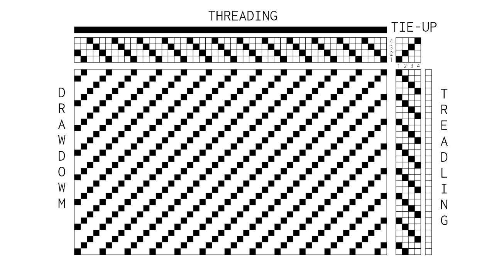
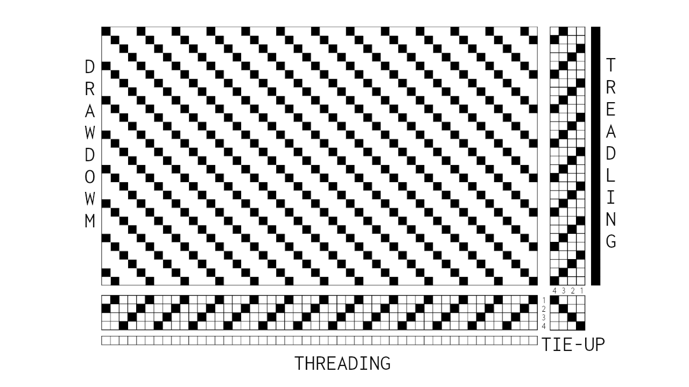

Weaving Drafts and Notation
Many of the operations of this project to this date are inolving weaving drafts, also known as notations. These are a way to share not only weaving patterns and structures but instructions on how to achieve them. They show how to set up a loom and work with it in a certain way, and perhaps what might be the result of that particulary recipe. The drafts contain information about a weaving process as well as an abstract idea of what might come out of it. They are some times likened to computer code, a visual markup language or music notation, a balancing act between a strict procedure and an imaginative sketch maps with plenty of room for improvisation, intuition, error and external particularities and influences of any kind.
The drafts say little about the materiality of the final weave, it’s size, structure, shape, texture or colour. But they have, perhaps, a distinct and peculiar liveliness and tension within them. They tell us about movement and timing, hesitation and anticipation. They give advice on when to act and how. And perhaps more importantly the drafts carry the history, traditions, identities and memories contained within the patterns they represent as well as reflecting the binary and digital nature of weaving in their fields, grids and matrices.
READING THE DRAFTS
Weaving is fundamentally the act of interlacing of two sets of threds or yarns, crossed over at a right angle into a constent piece of fabric. A fixed set of lengthwise ordered threads, the warp, is interlaced by an other set of threads know as weft. The manner in which selected warp threads are lifted creates what is called a shed, an opening through which the weft is passed over the remaining warp. Every pass, called pick or shot, is positioned or beaten into the fabric. A loom is a device, frame or structure of varying complexity used to tension and organize the warp and facilitate the weaving process.
In a shaft loom, a number of shafts or harnesses acts as frames holding a particular set of warp threads in heddles, loops through wich the the warp is passed and spaced. The shafts are connected to a series of treadles or mechanisms, often foot pedals, which can control and move the different shafts, lifting certain warp threads, creating different sheds and thus allowing a patterned fabric to emerge.
A weaving draft usually have four different sections, displayed within grid like fields. One representing the warp threads passing through the shafts is usually called the threading. Another demonstrating the movement or order of activate the treadles, the treadling. A third, smaller grid called the tie-up, tells you how to connect the treadles to the shafts. The final section or drawdown, the largest field, shows a representation of all the intersecting threads through the pattern and texture or interplay between setup and handling of the loom.
ON DRAFT TYPES AND VARIATIONS
There are many types of looms and many different ways to write drafts. Some drafts uses filled squares, other crosses or lines, some have full color representations and some write out the treadling as continuous lines. The sections of the drafts, as well as their positions may vary, but most drafts can be converted to be woven any loom.
A common difference in drafts that reflects variations in looms are if they representing sinking shafts (as for example counterbalance or countermarch looms) or rising shafts (jack looms), for which one often uses drafts with either weft drawdown (where lowered warp threads are marked) or warp drawdown(where lifted warp threads are marked). One can either redraw a draft to fit either or weave as is with the result of the fabric being woven upside down (only while in the loom that is, the fabric it self will stay the same).
The position, numbering of treadlings and shafts and reading direction vary as well. Commonly in what is sometimes called American drafts, the threading and tie-up are positioned on top of the drawdown with the treadling and tie-up (often but not always) on the right side of the draft. The threading is read left to right, and the treadling from top to bottom. The shafts are numbered from lowest to highest starting from the bottom(front to back), and the treadles from left to right.
[An American styled draft for a rising shed loom]
In Sweden drafts are traditionally written differently. The threading and tie-up is drawn below the drawdown, with the treadling and tie-up often positioned on the right side. Shafts are numbered from bottom to top (or back to front), and the treadles right to left.
[A Swedish styled draft for a sinking shed loom]
There are of course many more variations, styles and types of drafts. These are just two examples.